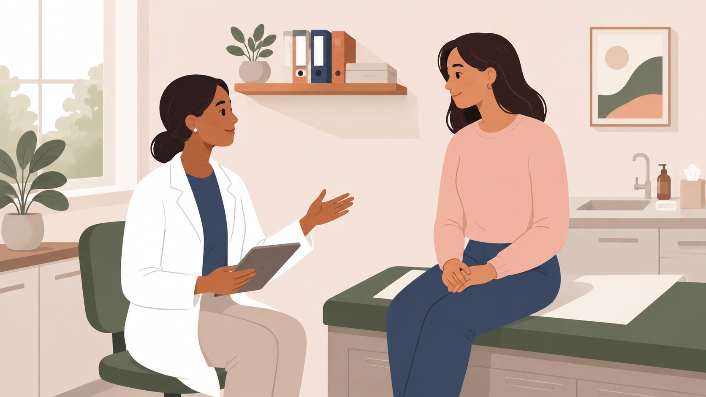

The science of placebo effects
Placebo effects are the causal effects of the treatment context, including cues, social context, verbal suggestions, and learned associations, on the trajectory of health and wellbeing. This site integrates scientific research on placebo effects as a service to the scientific community and the public. New papers from the peer-reviewed literature are integrated each day, and a searchable database provides a way to browse past literature from the 1940s to today. See the menu at the top and the links below for this and more, including a graph of researchers, upcoming events, and other scientific resources.

Sections
Explore the site
New papers
This week's placebo and nocebo studies, with color-coded keyword chips you can filter on.
Database
Search titles, abstracts and tags across the whole literature, from the 1940s to this morning.
Bibliometrics
How the field has grown: papers per year, designs, populations, outcomes, journals and authors.
Researcher network
An interactive map of placebo researchers, linked by co-authorship or by the topics they study.
In the news
News stories, podcasts and blog posts about placebo effects, refreshed every two days.
Events
Conferences, symposia, webinars and summer schools in the coming year.
Resources
Centers, programs, labs, societies and databases devoted to placebo research worldwide.
Discussion
Comment on papers and talk with other researchers about findings, methods and clinical use.
Latest
Just added
The three most recently added studies. See all new papers or subscribe by RSS.
Standing on JIPS
Building on the Journal of Interdisciplinary Placebo Studies database
From 2016 to 2025, Katja Weimer, Paul Enck and colleagues hand-curated a monthly list of new placebo and nocebo publications and a library of more than 5,000 papers. Science of Placebo continues that work with an automated daily search, and its historical collection was seeded with their lists.